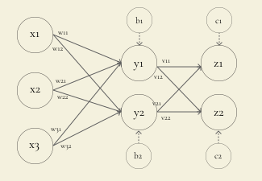
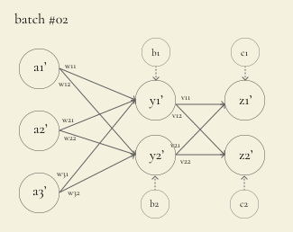
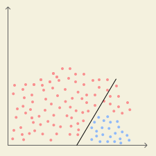
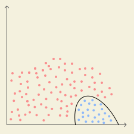
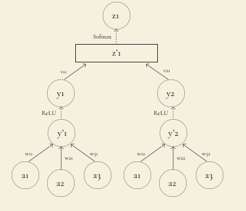

hey there! i have recently started exploring the world of machine learning and have been trying to implement a simple neural network from scratch (referring to "Neural Networks from Scratch"), so i thought of writing a blog series about neural networks, their working under-the-hood and how to implement one in golang.
before directly diving into neural networks, we have to get an idea about what machine learning actually is. if you are not living under a rock, you might have heard about the word "machine learning" or "artificial intelligence" at least once in the recent times. chatgpt, claude, perplexity and gemini are all possible because of the magic of machine learning.
machine learning is a field in computer science which deals with teaching computers to learn from experiences and make some predications, without being explicity programmed. whereas, artificial intelligence is a much broader classfication and it consists of various sub-domains such as machine learning (ML) and natural language processing (NLP).
machine learning is all about different algorithms that are fed with some input data, do some math, and make predictions. for example, email providers like gmail use machine learning algorithms to filter your email and keep spam out of your inbox.
on a high-level, the email spam filtering algorithms are trained (i.e. fed with) on a huge dataset of emails and each email is labeled as "spam" or "not spam". after analyzing, the algorithm eventually learns how to spot whether an email is spam or not by identifying some patterns.
in the above example, the algorithm identifies whether a certain mail is spam or not spam i.e. classifies the input data into different categories. this is an example of classification. in classification, the algorithm predicts which category something belongs to based on its characteristics.
in case of weather forecasting, the algorithm takes in different input data such as temperature history, humidity, wind speed and pressure and predicts the probable temperature. this is an example of regression. in regression, the algorithm predicts a continuous numerical value based on input data.
until now, we have fed the algorithms with input data which trains them, but there are other ways of training as well. let's briefly go through the most popular ones:
in supervised learning, the algorithm is presented with a dataset of inputs along with their desired outputs (labels). for example, to design a machine learning algorithm that categorizes images of humans and cats, the algorithm is fed with thousands of images of humans and cats and each image is labeled as either "human" or "cat".
in unsupervised learning, the algorithm is presented with a dataset of inputs but with their desired outputs, which means the algorithm must find structure, patterns and group similar ones all by itself.
in reinforcement learning, the algorithm performs an action in an environment and then recieves a feedback, basically "learning from mistakes".
neural networks, also known as artifical neural networks (ANNs), is a type of machine learning algorithm that is inspired by the biological brain. neural networks approach various problems by trying to mimic how neurons in the human brain work. they are composed of large number of highly interconnected elements (nodes) that work in parallel to solve a specific problem.
there are different types of neural networks, each specialized for a certain task such as speech recognition or image recognition.
irrespective of complexity of various neural networks, they all have the same fundamental basis. every neural network is built on top of the following elements - neurons, weights and biases.
neurons are the "highly interconnected nodes" of the neural network. neurons act like the processing units in a neural network, receiving inputs from other neurons, performing caluclations and then producing the output that is passed on to the other connected neurons.
in the above image, \(a_1\), \(a_2\), \(a_3\), \(y_1\) and \(y_2\) are the neurons. \(a_1\), \(a_2\) and \(a_3\) recieve the training data (aka input data) which is then processed and sent to \(y_1\) and \(y_2\).
a collection of neurons form a layer. in the above image, there are two input and output layers. the input layer consists of \(a_1\), \(a_2\) and \(a_3\) whereas the output layer consists of \(b_1\) and \(b_2\). the neurons in the current layer affect the value of neurons in the next layer i.e. the value of \(y_1\) depends on \(a_1\), \(a_2\) and \(a_3\) and similarly for \(y_2\) as well.
weight determines how much a neuron in the current layer affects the neuron in the next layer. each connection of neurons has a specific weight assigned to it.
in the above figure, the weights in the following fashion:
the value of \(y_1\) is determined by taking weighted sum of all the neurons which are connected to it. in the above example, it would be calculated as follows:
$$\begin{aligned} y_1 &= a_1w_1 + a_2w_2 + a_3w_3 \\ &= \sum_{i = 1}^3 a_iw_i \end{aligned}$$
and similarly for \(y_2\)
$$\begin{aligned} y_2 &= a_1v_1 + a_2v_2 + a_3v_3 \\ &= \sum_{j = 1}^3 a_jv_j \end{aligned}$$
currently, our neural network is based on a simple linear equation of the form \(y = mx\) but what if we want to offset the result? i.e. if the result of the weighted sum is 0 then we want the neural network to return 2. we would have to add an offset constant to our above-mentioned linear equation, which makes it \(y = mx + c\).
the additional +c in the equation is the bias. bias is used to offset the value of the weighted sum.
in the above image, \(b_1\) and \(b_2\) are the biases for \(y_1\) and \(y_2\). every neuron has its' own biases - similar to how every neuron connection has its' own weight.
to calculate the value of \(y_1\), we have to just add \(b_1\) to the previously calculated weighted sum.
$$\begin{aligned} y_1 &= (a_1w_1 + a_2w_2 + a_3w_3) + b_1 \\ &= \left(\sum_{i = 1}^3 a_iw_i \right) + b_1 \end{aligned}$$
and similarly for \(y_2\)
$$\begin{aligned} y_2 &= (a_1v_1 + a_2v_2 + a_3v_3) + b_2 \\ &= \left(\sum_{j = 1}^3 a_jv_j \right) + b_2 \end{aligned}$$
let's general the formula using a bit of linear algebra. let's consider a few matrices - \(A\), \(W\), \(B\) and \(Y\).
$$\text{A} = \left(\begin{matrix} a_1 & a_2 & a_3 \end{matrix} \right)$$
$$\text{W} = \left(\begin{matrix} w_1 & v_1 \\ w_2 & v_2 \\ w_3 & v_3 \end{matrix} \right)$$
\(w_1\), \(w_2\) and \(w_3\) are present in the 1st column, thereby they are the weights related to \(a_1\) and similarly for \(v_1\), \(v_2\) and \(v_3\).
$$\text{B} = \left(\begin{matrix} b_1 & b_2 \end{matrix} \right)$$
$$\text{Y} = \left(\begin{matrix} y_1 & y_2 \end{matrix} \right)$$
using linear algebra, we can find relation between \(A\), \(W\), \(B\) and \(Y\).
$$\text{Y} = \text{A}\text{W} + \text{B}$$
let's code out a simple neural network with two layers (input and output layer) in golang. the input layer consists of 3 neurons and the output layer consists of 2 neurons.
start with defining \(A\), \(W\) and \(B\) matrices. for now, use any random values to populate the matrices.
package main
func main() {
A := []float64{1, 2, 3}
W := [][]float64{
{0.5, 0.7},
{0.4, 0.6},
{0.3, 0.2},
}
B := []float64{1, 0.9}
}let's start with implementing the matrix multiplication between \(A\) and \(W\).
AxW := make([][]float64, len(A))
for i := range AxW {
AxW[i] = make([]float64, len(W[0]))
}
for i := 0; i < len(A); i++ {
for j := 0; j < len(W[0]); j++ {
sum := 0.0
for k := 0; k < len(W); k++ {
sum += A[i][k] * W[k][j]
}
AxW[i][j] = sum
}
}the code starts off with allocating the required size for the result matrix i.e. \(A \times W\). the shape of \(A \times W\) matrix is mxn, where m is equal to number of rows of \(A\) and n is the number of columns of \(W\).
the code then loops through every row in \(A\) and every column in \(W\), and then it multiplies the corresponding elements and calculates the total sum.
the above code assumes that both the matrices are multipliable with each other. for two matrices, the number of columns in the first matrix must be equal to number of rows in the second matrix.
let's now implement the matrix addition between \(A \times W\) and \(B\).
result := make([][]float64, len(AxW))
for i := range result {
result[i] = make([]float64, len(AxW[0]))
}
for i := 0; i < len(AxW); i++ {
for j := 0; j < len(AxW[0]); j++ {
result[i][j] = AxW[i][j] + B[i][j]
}
}
the code starts off with allocating the required size for the result
matrix. the shape of result matrix is equal to the shape of
\(A \times W\) matrix, as two matrices can be added/subtracted only when
their shapes (dimensions) are equal.
here's the entire code until now:
package main
import "fmt"
func main() {
A := [][]float64{{1, 2, 3}}
W := [][]float64{
{0.5, 0.7},
{0.4, 0.6},
{0.3, 0.2},
}
B := [][]float64{{1, 0.9}}
AxW := make([][]float64, len(A))
for i := range AxW {
AxW[i] = make([]float64, len(W[0]))
}
for i := 0; i < len(A); i++ {
for j := 0; j < len(W[0]); j++ {
sum := 0.0
for k := 0; k < len(W); k++ {
sum += A[i][k] * W[k][j]
}
AxW[i][j] = sum
}
}
result := make([][]float64, len(AxW))
for i := range result {
result[i] = make([]float64, len(AxW[0]))
}
for i := 0; i < len(AxW); i++ {
for j := 0; j < len(AxW[0]); j++ {
result[i][j] = AxW[i][j] + B[i][j]
}
}
fmt.Println(result)
}
on running the script, it must print out [[3.2 3.4]]. you can
verify the answer via a calculator or solving the matrices by hand.
the current implementation works but it is pretty rough and has a lot of
areas of failure. let's make a few utility functions related to different
matrix operations so that we don't have to write out the logic from
scratch, using for loop, every time we want to do that
specific matrix operation.
let's create a new distinct type named Matrix, on which we
will define our utility functions as custom methods.
package math
type Matrix [][]float64
over here, we are creating a new distinct type and not a type alias. to
define a type alias, we have to add = operator in between.
type Matrix = [][]float64let's start with methods which return metadata related to the matrix i.e. return number of rows and columns.
func (m Matrix) Rows() int {
return len(m)
}
func (m Matrix) Cols() int {
return len(m[0])
}let's also add another helper function which allocates memory for a matrix with given number of rows and columns.
func AllocateMatrix(rows, cols int) Matrix {
matrix := make(Matrix, rows)
for i := range matrix {
matrix[i] = make([]float64, cols)
}
return matrix
}now let's utilize these functions to implement matrix addition.
func (m Matrix) Add(n Matrix) Matrix {
if (m.Rows() != n.Rows()) || (m.Cols() != n.Cols()) {
panic("invalid dimensions")
}
result := AllocateMatrix(m.Rows(), n.Cols())
for i := 0; i < m.Rows(); i++ {
for j := 0; j < n.Cols(); j++ {
result[i][j] = m[i][j] + n[i][j]
}
}
return result
}the code is pretty much the same as the barebones for-loop which we wrote initially. the only additional thing that is added is checking if both the matrices can be added or not i.e. checking if their dimensions are equal.
let's also implement matrix multiplication.
func (m Matrix) Multiply(n Matrix) Matrix {
if m.Cols() != n.Rows() {
panic(fmt.Errorf("invalid operation, tried to multiply %dx%d matrix with %dx%d matrix", m.Rows(), m.Cols(), n.Rows(), n.Cols()))
}
result := AllocateMatrix(m.Rows(), n.Cols())
for i := 0; i < m.Rows(); i++ {
for j := 0; j < n.Cols(); j++ {
sum := 0.0
for k := 0; k < n.Rows(); k++ {
sum += m[i][k] * n[k][j]
}
result[i][j] = sum
}
}
return result
}the code is pretty much the same except for the fact that the it now also checks whether both the matrices are multipliable by checking if number of columns of the 1st matrix is equal to number of rows of the 2nd matrix.
time to use these utility functions to refactor main.go.
package main
import (
"fmt"
m "nn/math"
)
func main() {
A := m.Matrix{{1, 2, 3}}
W := m.Matrix{
{0.5, 0.7},
{0.4, 0.6},
{0.3, 0.2},
}
B := m.Matrix{{1, 0.9}}
result := A.Multiply(W).Add(B)
fmt.Println(result)
}the code looks much more cleaner and elegant! and it is also much easier to understand what is exactly happening.

until now we have only worked with single hidden layer, which was the output layer. let's add in another layer.
there is a slight change in naming convention - the weights of first layer are denoted as \(w_{ij}\) where \(i\) is the index of neuron in the current layer and \(j\) is the index of neuron of in the next layer and similarly for weights of second layer but it is denoted as \(v_{ij}\).
adding more layers to a neural network, allows the network to learn more complex patterns and relationships within the input data.
implementing it in code is pretty easy. the output of first hidden layer
is the input of second hidden layer, so in place of A, we'll
use result1 as the input while calculating values in the
output layer (second hidden layer). W1 and
B1 are the weights and biases corresponding to first hidden
layer and similarly for W2 and B2.
package main
import (
"fmt"
m "nn/math"
)
func main() {
A := m.Matrix{{1, 2, 3}}
W1 := m.Matrix{
{0.5, 0.7},
{0.4, 0.6},
{0.3, 0.2},
}
B1 := m.Matrix{{1, 0.9}}
W2 := m.Matrix{
{0.7, 0.9},
{-0.4, 0.3},
}
B2 := m.Matrix{{1.1, -0.9}}
result1 := A.Multiply(W1).Add(B1)
result2 := result1.Multiply(W2).Add(B2)
fmt.Println(result2)
}lovely! but let's refactor the code a bit.
let's create a layer of abstraction which generates a hidden layer with random weights and biases based on number of input neurons and number of output neurons.
package neural
import (
m "nn/math"
)
type DenseLayer struct {
Input, Weights, Bias m.Matrix
NInputs, NNeurons int
}
NInputs is the number of input neurons and
NNeurons is the number of output neurons.
func NewDenseLayer(nInputs, nNeurons int) *DenseLayer {
dl := &DenseLayer{}
dl.Weights = m.AllocateMatrix(nInputs, nNeurons)
dl.Bias = m.AllocateMatrix(1, nNeurons)
for i := range dl.Weights {
for j := range dl.Weights[i] {
dl.Weights[i][j] = rand.Float64()*2 - 1
}
}
dl.NInputs = nInputs
dl.NNeurons = nNeurons
return dl
}
NewDenseLayer acts like the constructor for
DenseLayer struct. it returns a new denselayer with randomly
generated weights, in the range of [-1, 1), and zero'ed biases, and sets
the value of NInputs and NNeurons.
rand.Float64 returns a random float in the range of [0, 1),
so to generate a float in the range of [-1, 1), we have multiplied it by 2
and then subtracted 1 from it - a common technique for mapping elements in
range of [0, 1) to [-1, 1).
until now, we have been processing the input data and passing it to the next layer. this is called as forward pass. during forward pass, the input data moves from the input layer through the hidden layers to the output layer.
func (dl *DenseLayer) Forward(input m.Matrix) m.Matrix {
return input.Multiply(dl.Weights).Add(dl.Bias)
}
Forward method performs a forward pass on that specific
hidden layer, basically returns sum of the weighted sum and biases.
let's utilize this new layer of abstraction in main.go.
package main
import (
"fmt"
m "nn/math"
n "nn/neural"
)
func main() {
input := m.Matrix{{1, 2, 3}}
dl1 := n.NewDenseLayer(3, 2)
dl2 := n.NewDenseLayer(2, 2)
result1 := dl1.Forward(input)
result2 := dl2.Forward(result1)
fmt.Println(result2)
}the above code performs a forward pass on a neural network with 3 layers - input layer with 3 neurons, hidden layer with 2 neurons and output layer with 2 neurons.


neither rome is built within a single iteration nor a neural network is trained with a single batch of input data. (sorry for the bad joke)
we have to tweak our forward pass logic to support batch inputs, as the one mentioned above, and return individual outputs for each set of inputs.
// expected input
input := m.Matrix{
{1, 2, 3},
{4, 5, 6},
}
// expected output
output := m.Matrix{
{0.4, -0.56},
{-7.89, 0.98},
}but just adding another row to the input matrix wouldn't work, as in our forward pass method, bias is a row matrix, and with batched inputs, the weighted sum wouldn't be a row matrix as earlier, and two matrices of different dimensions can't be added.
a solution for this is to loop through the input matrix, where the type of
each element is []float64. convert the elements from
[]float64 to a row matrix, perform the calculations, convert
it back to []float64 and append it to a result matrix.
let's code out the utility functions related to conversion between
[]float64 and row matrix.
func ToRowMatrix(v []float64) Matrix {
m := AllocateMatrix(1, len(v))
for i := range m {
for j := range m[i] {
m[i][j] = v[j]
}
}
return m
}func (m Matrix) ToFloatSlice() []float64 {
if len(m) != 1 {
panic("not a row matrix")
}
return m[0]
}let's use these utility functions while performing forward pass.
func (dl *DenseLayer) Forward(input m.Matrix) m.Matrix {
result := m.AllocateMatrix(len(input), dl.NNeurons)
for i, v := range input {
result[i] = m.ToRowMatrix(v).Multiply(dl.Weights).Add(dl.Bias).ToFloatSlice()
}
return result
}the shape of input matrix is mxn, where m is the number of batches and n is the number of input neurons (features). the shape of result matrix is mxn, where m is the number of batches and n is the number of output neurons.
update the input to the one as mentioned above and run
main.go again. the output must contain 2 rows and within each
row, there must be 2 values.
with the current architecture of our neural network (multi-layer perceptron), it can only model the predications with linear functions irrespective of number of hidden layers. if f(x) is linear then f(f(f(f(x)))) is also linear.
in the below image, the neural network is trying to classify objects into two different categories represented by red and blue dots.

the network might have high accuracy for simple training data, but as the training data gets more complicated, the network fails to model the predications properly using just linear functions.

notice how the network fails to model the predications using just linear functions. the network labels a decent chunk of objects belonging to red category as blue.
activation functions are the components of the neural network that introduce non-linearity into the network, allowing the networks to learn more complex patterns and relationships. notice the change between how the network models the predications with help of activation function and with just linear functions. activation functions also determine whether a neuron is activated or not and by much as well.

notice how the network is able to model the predications with much more accuracy as compared to with just linear functions.
there are different types of activation functions, so let's go through few of most commonly used ones:
$$f(x) = \left\{ \begin{array}{ll} 1 & \text{if } x > 0 \\ 0 & \text{if } x \leq 0 \end{array} \right. $$
>> check out the graph of step function on desmos
the unit step function is a discontinous function which models the on/off behavior of a switch into the network. it is also known as the heaviside function.
if the value of a neuron is less than or equal to 0 then it is not activated else it is activated. the unit step function is one of the most basic activation function and it clearly shows the concept of a neuron being activated.
but unit step function isn't generally used as an activation function. while training our neural network, the optimizer (the component responsible for training the network) needs to also know how much of the neuron is activated i.e. how close or far is the neuron from the threshold.
with unit step function, the output is either 1 or 0 so the question of "how much" can't really be answered with the help of unit step function. thereby, making unit step function less informative, in terms of being an activation functions.
$$\sigma(x) = \frac{1}{1 + e^{-x}}$$
>> check out the graph of sigmoid function on desmos
the sigmoid function (also called as logistic function) is a S-shaped monotonically increasing function. the major difference between the unit step function and sigmoid function is that sigmoid is monotonically increasing.
due to the monotonically increasing behaviour of the sigmoid function, the optimizer can judge how close or far is the neuron from the threshold.
the range of sigmoid function is (0, 1) (where 0 and 1 are exclusive)
$$\sigma(x) = 0, \text{when} \; x = -\infty \\ \sigma(x) = 1, \text{when} \; x = \infty$$
sigmoid function is a common choice as an activation function when probability distributions are expected in the output layer as the input to the function is transformed into a value between 0.0 and 1.0.
$$\text{tanh}(x) = \frac{e^x - e^{-x}}{e^x + e^{-x}} = 2\sigma(2x) - 1$$
>> check out the graph of tanh on desmos
tangent hyperbolic or tanh function is another common choice as an activation function in neural networks. tanh is a shifted and stretched version of the sigmoid.
the range of tanh is -1.0 to 1.0, as compared to 0.0 to 1.0 in the case of sigmoid. generally, tanh is preferred over sigmoid as it performs better.
but there is an issue with both tanh and sigmoid and that is vanishing gradient problem. i won't be going too deep into this topic as it requires the knowledge of backpropagation. i will be covering this topic along with backpropagation in the next part of this series.
$$\begin{aligned} f(x) &= \left\{ \begin{array}{ll} x & \text{if } x > 0 \\ 0 & \text{if } x \leq 0 \end{array} \right. \\ &= \text{max}(0, \; x) \end{aligned}$$
>> check out the graph of ReLU on desmos
rectified linear activation function or ReLU is a simple yet effective non-linear activation function. if a value is greater than 0 then it outputs it as it is else it outputs 0.
ReLU addresses the vanishing gradient problem, making it effective in deep learning architectures.
but there is a problem with ReLU as well - dying ReLU problem. as this topic also requires knowledge of backpropagation, i would be covering this topic, along with vanishing gradient problem, in the next blog post in this series.
but here is a simple explaination of dying ReLU problem which is enough to give you the context to understand why leaky ReLU exists.
the dying ReLU problem occurs when neurons using the ReLU activation function become permanently inactive during neural network training (i will deep dive into what neural network training is and how does it happen in later blog posts). these neurons consistenly output 0 for any input, effectively dying and stopping their "learning" process.
$$\begin{aligned} f(x) &= \left\{ \begin{array}{ll} x & \text{if } x > 0 \\ 0.01x & \text{if } x \leq 0 \end{array} \right. \\ &= \text{max}(0.01x, \; x) \end{aligned}$$
>> check out the graph of leaky ReLU on desmos
leaky ReLU came into existence to fix the issue of the dying ReLU problem. rather than outputting 0 which leads to dead neurons, the leaky ReLU output that value multiplied by a tiny fraction such as 0.01.
$$S(x_i) = \frac{e^{x_i}}{\sum_{j = 1}^{n} e^{x_j}}$$
>> check out the visualization of softmax on desmos
the softmax function is a special one as it doesn't take in a single input but rather a vector of inputs and returns a vector of probabilities. \(S(x_i)\) indicates the probability for \(x_i\) element in the input vector.
$$\begin{bmatrix} 1 \\ 2 \\ 3 \end{bmatrix} \to S(x) \to \begin{bmatrix} 0.09 \\ 0.245 \\ 0.665 \end{bmatrix}$$
the softmax function is used in the output layer of the neural network to convert the raw output scores into probabilities. with the help of the softmax, the output values are always in the range of (0, 1) and sum up to 1, making them interpretable as probabilities.
softmax returns an output which is normalized and inclusive. it is normalized as the output values are always in the range of (0, 1) and it is inclusive as sum of all the output values is always 1 i.e. the output values are dependant on each other.
phew, that was a lot of theory. let's get back to coding and write some code to implement these activation functions.
let's update our existing mini neural network and use ReLU and softmax as the activation function. we'll use ReLU on the hidden layer and softmax on the output layer.
we'll follow a similar design pattern as the one that we used for the
DenseLayer struct while implementating the different
activation functions.
type ReLU struct {
Input m.Matrix
}
func NewReLU(input m.Matrix) *ReLU {
return &ReLU{
Input: input,
}
}implementation of ReLU is pretty straightforward as it involves finding the maximum between 0 and the input.
func (r *ReLU) Forward() m.Matrix {
output := m.AllocateMatrix(r.Input.Rows(), r.Input.Cols())
for i := range r.Input {
for j := range r.Input[i] {
output[i][j] = math.Max(0, r.Input[i][j])
}
}
return output
}let's use ReLU on the hidden layer i.e. dl1 in our code.
func main() {
input := m.Matrix{
{1, 2, 3},
{4, 5, 6},
}
dl1 := n.NewDenseLayer(3, 2)
dl2 := n.NewDenseLayer(2, 2)
result1 := dl1.Forward(input)
fmt.Printf("dl1 result: %v\n", result1)
relu := activations.NewReLU(result1)
reluResult := relu.Forward()
fmt.Printf("relu: %v\n", reluResult)
result2 := dl2.Forward(reluResult)
fmt.Printf("dl2 result: %v\n", result2)
}dl1 result: [[2.0918056492311905 -0.06373246654912879] [4.303810170604677 -1.1511349329761926]]
relu: [[2.0918056492311905 0] [4.303810170604677 0]]
dl2 result: [[1.472915080022815 -1.2377578322618843] [3.0304664796029424 -2.546639430480636]]notice how the values less than 0 are set to 0 and the ones which are greater than 0 are untouched.
type Softmax struct {
Input m.Matrix
}
func NewSoftmax(input m.Matrix) *Softmax {
return &Softmax{
Input: input,
}
}in softmax function, e is raised to the power of each of the input values, the sum of all these values is calculated and then each exponential value is normalized by dividing it by the sum.
func (s *Softmax) Forward() m.Matrix {
output := m.AllocateMatrix(s.Input.Rows(), s.Input.Cols())
for i := range s.Input {
exps := make([]float64, s.Input.Cols())
sum := 0.0
for j := range s.Input[i] {
exps[j] = math.Exp(s.Input[i][j])
}
for j := range exps {
sum += exps[j]
}
for j := range exps {
output[i][j] = exps[j] / sum
}
}
return output
}
let's use softmax as the activation layer for the output layer i.e.
dl2 in our code.
func main() {
input := m.Matrix{
{1, 2, 3},
{4, 5, 6},
}
dl1 := n.NewDenseLayer(3, 2)
dl2 := n.NewDenseLayer(2, 2)
result1 := dl1.Forward(input)
fmt.Printf("dl1 result: %v\n", result1)
relu := activations.NewReLU(result1)
reluResult := relu.Forward()
fmt.Printf("relu: %v\n", reluResult)
result2 := dl2.Forward(reluResult)
fmt.Printf("dl2 result: %v\n", result2)
softmax := activations.NewSoftmax(result2)
softmaxResult := softmax.Forward()
fmt.Printf("softmax: %v\n", softmaxResult)
}dl1 result: [[0.15515579283567238 1.3418595751701707] [-2.326611495106075 4.655190256597826]]
relu: [[0.15515579283567238 1.3418595751701707] [0 4.655190256597826]]
dl2 result: [[1.1318912355545137 0.29906364197338153] [4.431470142630381 1.313496448955001]]
softmax: [[0.6969524774540506 0.3030475225459493] [0.9576280838647717 0.04237191613522825]]if you notice, the probabilities within a single row (single input batch) add up to 1, which proves the inclusive behavior of softmax function.
there is a problem with our current implementation of softmax which is
overflow error due to math.Exp. it doesn't a large number to
cause overflow error due to math.Exp. for example, 1000
causes overflow error and math.Exp(1000) returns
+Inf.
to fix, we can subtract the max number from the current value before calculating value of e^x for that value. due to the nature of softmax function, the output values won't change even if you add/subtract the same number to all the input values.
func (s *Softmax) Forward() m.Matrix {
output := m.AllocateMatrix(s.Input.Rows(), s.Input.Cols())
for i := range s.Input {
max := slices.Max(s.Input[i])
exps := make([]float64, s.Input.Cols())
sum := 0.0
for j := range s.Input[i] {
exps[j] = math.Exp(s.Input[i][j] - max)
}
for j := range exps {
sum += exps[j]
}
for j := range exps {
output[i][j] = exps[j] / sum
}
}
return output
}lovely!
as discussed earlier, we pass in the corresponding labels for every training data in supervised learning, which basically acts like the expected/desired output.
currently our neural network's parameters (weights and biases) are set randomly so obviously it won't give the desired output right away. we have to train it.
training a neural network is very much similar as to how a human learns which is via trial and error and getting feedback. we use a function which tells how wrong the network's output is with respect to the desired outputs and accordingly we tweak the weights and biases to increase the accuracy.
similar to activation functions, there are different loss function and each has a specific usecase, so let's go through few of the commonly used ones.
$$L(y, \hat{y}) = \frac{1}{n} \sum_{i = 1}^{n} | \hat{y} - y |$$
\(y\) is the output by the network and \(\hat{y}\) is the desired output
mean absolute error or L1 loss function is one of the most simple loss functions used for regression type problems - it calculates the absolute difference between the desired output and the actual output and returns the mean value.
$$L(y, \hat{y}) = \frac{1}{n} \sum_{i = 1}^{n} \left(\hat{y} - y \right)^2$$
mean squared error or L2 loss function is a commonly used loss function for linear regression type problems - it calculates the difference between desired output and actual output, squares it and returns the mean value of it.
mean squared error (L2 loss function)is generally used over mean absolute error (L1 loss function) as it penalizes (puts more weight) large errors more and small errors less and also because L1 loss function produces a non-differentiable function (function in similar shape as |x| i.e. non-differentiable at x = 0) which causes problems which trying to train the model by optimizing the parameters which involves differentiaing the loss function (will discuss more about it in the topic of optimizers).
$$e = |\hat{y} - y|$$
if \(e \leq \delta\):
$$L(y, \hat{y}) = \frac{1}{n} \sum_{i = 1}^{n} \frac{1}{2} (\hat{y} - y)^2$$
else:
$$L(y, \hat{y}) = \frac{1}{n} \sum_{i = 1}^{n} \delta \left( |\hat{y} - y| - \frac{1}{2} \delta \right)$$
if the input data consists of outliers, a data point that is significantly different from other data points in a dataset, and mean squared error is used as the loss function then it will result will in large deviations as the entire model tries to fit towards outliers.
to eliminate this issue, the huber loss takes in the pros of L1 and L2 function and forms a hybrid function of both. L1 function isn't that sensitive to outliers as L2 function but L2 function penalizes small errors well and is differentiable.
\(\delta \) is the threshold up till which huber loss behaves as like L2 function and after which it behaves like L1 function, to avoid large deviation caused due to L2 function because of outliers.
huber loss function offers a smooth transition between loss functions of two different nature - quadratic and linear, making it optimal choice for datasets with both normally distributed data and some outliers.
$$L(y, \hat{y}) = \sum_{i = 1}^{n}\log(\cosh(y - \hat{y}))$$
log-cosh loss is another commonly used loss function in regression type problems. it combines the pros of L1 and L2 functions without introducing an additional hyperparameter like \(\delta\) in huber loss.
when x is very small:
$$\log(\cosh(x)) \approx \frac{x^2}{2}$$
when x is very large:
$$\log(\cosh(x)) \approx |x| - \log(2)$$
for small values of predication errors, log-cosh loss behaves like L2 function and for large values, it behaves like L1 function, thereby handling the issue with outliers.
log-cosh is twice differentiable everywhere. this smooth gradient can lead to better optimization behavior, especially for methods that use second derivatives like netwon's method.
$$L(y, \hat{y}) = -\sum_{i = 1}^{n} \left(\hat{y} \; \log y \right)$$
cross-entropy loss is a commonly used loss function for classification type problems. it calculates the product between desired output and negative loss of predicated output.
generally, in classification problems, the desired outputs will be in the form of a one-hot vector i.e. the expected output's value is 1 and the remaining others are 0.
consider a simple neural network which is trying to solve a classification problem and has 3 neurons in the output layer, so the desired output would look something like [1, 0, 0]
thereby, the cross-entropy loss function can be simplified down
$$L(y, \hat{y}) = -\log y_{a}$$
where \(y_{a}\) is the predicated output of the desired output neuron.
for our simple neural network, we will use cross-entropy loss as the function, so let's code it out!
type CrossEntropy struct {
Input m.Matrix
}
func NewCrossEntropy(input m.Matrix) *CrossEntropy {
return &CrossEntropy{
Input: input,
}
}func (c *CrossEntropy) Forward(targetClasses m.Matrix) []float64 {
predicatedClassesIdx := make([]int, len(targetClasses))
losses := make([]float64, len(targetClasses))
for i := range targetClasses {
for j := range targetClasses[i] {
if targetClasses[i][j] == 1 {
predicatedClassesIdx[i] = j
}
}
}
for i, v := range predicatedClassesIdx {
predicatedValue := c.Input[i][v]
losses[i] = -math.Log(predicatedValue)
}
return losses
}
input is of shape mxn where m is the number of batches and n
is the number of neurons in the output layer and
targetClasses is a matrix consisting of one-hot encoded
vector and the shape of targetClasses is mxn where m is the
number of batches and n is the number of neurons in the output layer.
the function first loops through targetClasses and stores
indexes of desired outputs in predicatedClassesIdx and then
it loops through predicatedClassesIdx and applies a negative
log on those values.
let's utilize the loss function in our tiny neural network.
func main() {
input := m.Matrix{
{1, 2, 3},
{4, 5, 6},
}
dl1 := n.NewDenseLayer(3, 2)
dl2 := n.NewDenseLayer(2, 2)
targetClasses := m.Matrix{
{0, 1},
{1, 0},
}
result1 := dl1.Forward(input)
fmt.Printf("dl1 result: %v\n", result1)
relu := activations.NewReLU(result1)
reluResult := relu.Forward()
fmt.Printf("relu: %v\n", reluResult)
result2 := dl2.Forward(reluResult)
fmt.Printf("dl2 result: %v\n", result2)
softmax := activations.NewSoftmax(result2)
softmaxResult := softmax.Forward()
fmt.Printf("softmax: %v\n", softmaxResult)
crossEntropy := losses.NewCrossEntropy(softmaxResult)
crossEntropyResult := crossEntropy.Forward(targetClasses)
fmt.Printf("cross entropy - %v\n", crossEntropyResult)
}the loss function takes values of output neurons and target classes as the input and returns an array of losses.
dl1 result: [[3.2368390212243874 -3.138187035707692] [7.568743712607484 -7.624673711374685]]
relu: [[3.2368390212243874 0] [7.568743712607484 0]]
dl2 result: [[-0.3955121935487683 0.31564765946169937] [-0.9248314199602927 0.7380831182164586]]
softmax: [[0.32934260574552865 0.6706573942544714] [0.1593711427347598 0.8406288572652402]]
cross entropy - [0.3994968621904994 1.8365195658108964]
in the first batch, output at index 1 is the desired output
and in the second batch, output at index 2 is the desired
output
-ln(0.6706573942544714) = 0.39949686219 and -ln(0.1593711427347598) = 1.83651956581
which matches our output, lovely!
mean loss across all the batches gives a rough idea about how well the neural network works
func CalculateMeanLoss(losses []float64) float64 {
sum := 0.0
for _, v := range losses {
sum += v
}
meanLoss := sum / float64(len(losses))
return meanLoss
}crossEntropy := losses.NewCrossEntropy(softmaxResult)
crossEntropyResult := crossEntropy.Forward(targetClasses)
fmt.Printf("cross entropy - %v\n", crossEntropyResult)
fmt.Printf("mean loss - %f\n", utils.CalculateMeanLoss(crossEntropyResult))accuracy is another commonly used metric while training a neural network, it describes how often the largest output value is the desired output in terms of a fraction.
func CalculateAccuracy(targetClasses, output m.Matrix) float64 {
predicatedClassesIdx := []int{}
for i := range targetClasses {
for j := range targetClasses[i] {
if targetClasses[i][j] == 1 {
predicatedClassesIdx = append(predicatedClassesIdx, j)
}
}
}
accuracies := []int{}
for i, v := range predicatedClassesIdx {
maxElemIdx := MaxElemIdx(output[i])
predicatedClassIdx := v
if maxElemIdx == predicatedClassIdx {
accuracies = append(accuracies, 1)
} else {
accuracies = append(accuracies, 0)
}
}
sum := 0
for _, v := range accuracies {
sum += v
}
meanAccuracy := float64(sum)/float64(len(accuracies))
return meanAccuracy
}softmax := activations.NewSoftmax(result2)
softmaxResult := softmax.Forward()
fmt.Printf("softmax: %v\n", softmaxResult)
crossEntropy := losses.NewCrossEntropy(softmaxResult)
crossEntropyResult := crossEntropy.Forward(targetClasses)
fmt.Printf("cross entropy - %v\n", crossEntropyResult)
fmt.Printf("mean loss - %f\n", utils.CalculateMeanLoss(crossEntropyResult))
fmt.Printf("mean accuracy - %f\n", utils.CalculateAccuracy(targetClasses, softmaxResult))until now, we have been calculating the network output by multiplying the weights, adding biases, and applying activation functions but how do you train a neural network? how can the loss value returned by the loss function be reduced?
a neural network can be compared to a machine with millions of knobs (parameters - weights and biases) and on tweaking those knobs, the result changes. to reduce the loss, we have to find the optimal values of weights and biases for each layer that is closest to the desired result (minimize the cost).
backpropagation is a machine learning algorithm which is responsible for training the neural networks and you can find it almost every single neural network irrespective of its complexity.
let's revisit our neural network diagram
the neural network comprises an input layer, one hidden layer, and an output layer. the hidden layer uses ReLU as the activation function, the output layer uses softmax as the activation function, and cross-entropy is used as the loss function.
we first have to calculate how each parameter contributes to the total error and then use that value to update that parameter.
the contribution of a parameter towards the total error of the network can be represented mathematically with the help of partial derivatives.
ex. the contribution of \(w_{11}\) weight towards the total error \(L\) can be expressed as \(\frac{\delta L}{\delta w_{11}}\) i.e. partial derivatives of loss function with respect to \(w_{11}\).
let's first try to understand how \(w_{11}\) weight affects \(z_{1}\) and also mathematically derive an expression for it.

the above image shows the entire process behind how \(z_{1}\) was computed. \(z_{1}\) can be expressed as a function of multiple parameters.
$$z_{1} = S \left( z^{'}_{1} \right)$$
where \(S\) is the softmax activation function and \(z^{'}_{1}\) is the weighted sum of the hidden layer neurons i.e. \(y_{1}\) and \(y_{2}\).
$$\begin{aligned} z_{1} &= S \left( z^{'}_{1} \right) \\ &= S \left( \sum_{i = 1}^{2} y_{i}v_{i1} + c_{1} \right) \end{aligned}$$
similarly, \(y_{1}\) and \(y_{2}\) can also be expressed as multi parameter functions.
$$\begin{aligned} y_{1} &= R \left( y^{'}_{1} \right) \\ &= R \left(\sum_{i = 1}^{3} a_{i}w_{i1} + b_{1} \right) \end{aligned}$$
$$\begin{aligned} y_{2} &= R \left( y^{'}_{2} \right) \\ &= R \left(\sum_{i = 1}^{3} a_{i}w_{i2} + b_{1} \right) \end{aligned}$$
where \(R\) is the ReLU activation function and \(y^{'}_{1}\) and \(y^{'}_{2}\) are the weighted sums of the input layer neurons i.e. \(a_{1}\), \(a_{2}\) and \(a_{3}\).
the contribution of \(w_{11}\) towards the value of \(z_{1}\) can be mathematically expressed as \(\frac{\delta z_{1}}{\delta w_{11}}\) i.e. partial derivate of \(z_{1}\) with respect to \(w_{11}\).
\(w_{11}\) is not directly responsible for the value of \(z_{1}\) but it is involved in the process of computing \(z_{1}\) so on changing \(w_{11}\), \(z_{1}\) will also change and we are trying to find the expression which will tell by how much \(z_{1}\) will change on tweaking \(w_{11}\) i.e. change of \(z_{1}\) per unit change of \(w_{11}\).
the expression for partial derivate of \(z_{1}\) with respect to \(w_{11}\) can be found out with the help of chain rule.
$$\frac{\delta z_{1}}{\delta w_{11}} = \frac{\delta y^{'}_{1}}{w_{11}} \cdot \frac{\delta y_1}{\delta y^{'}_{1}} \cdot \frac{\delta z^{'}_{1}}{\delta y_{1}} \cdot \frac{\delta z_{1}}{\delta z^{'}_{1}}$$
let's find out the value of each partial derivative and multiply them at the end.
>> finding out partial derivative of \(y^{'}_{1}\) with respect to \(w_{11}\) is pretty simple as \(y^{'}_{1}\) is a linear expression.
$$y^{'}_{1} = a_{1}w_{11} + a_{2}w_{21} + a_{3}w_{31} + b_{1}$$
$$\frac{\delta y^{'}_{1}}{w_{11}} = a_{1}$$
>> to find out partial derivative of \(y_1\) with respect \(y^{'}_{1}\), we have to recall the definition of ReLU activation function as \(y_1\) is the ReLU activated value of \(y^{'}_{1}\) i.e. \(y_1 = R (y^{'}_{1}) \).
$$R(x) = \left\{ \begin{array}{ll} x & \text{if } \; x > 0 \\ 0 & \text{if } \; x \leq 0 \end{array} \right.$$
$$y_{1} = \left\{ \begin{array}{ll} y^{'}_{1} & \text{if } \; y^{'}_{1} > 0 \\ 0 & \text{if } \; y^{'}_{1} \leq 0 \end{array} \right.$$
$$\frac{\delta y_{1}}{\delta y^{'}_{1}} = \left\{ \begin{array}{ll} 1 & \text{if } \; y^{'}_{1} > 0 \\ 0 & \text{if } \; y^{'}_{1} \leq 0 \end{array} \right.$$
>> finding out partial derivative of \(z^{'}_{1}\) with respect to \(y_{1}\) is also pretty simple as \(z^{'}_{1}\) is a linear expression.
$$z^{'}_{1} = y_{1}v_{11} + y_{2}v_{21} + c_{1}$$
$$\frac{\delta z^{'}_{1}}{\delta y_{1}} = v_{11}$$
>> to find out partial derivative of \(z_{1}\) with respect to \(z^{'}_{1}\), we have to recall the definition of softmax function as \(z_{1}\) is the softmax activated value of \(z^{'}_{1}\) i.e. \(z_{1} = S(z^{'}_{1})\)
$$S(z^{'}_{1}) = \frac{e^{z^{'}_{1}}}{e^{z^{'}_{1}} + e^{z^{'}_{2}}}$$
$$\frac{\delta z_{1}}{\delta z^{'}_{1}} = \frac{e^{z^{'}_{1}} \left( e^{z^{'}_{1}} + e^{z^{'}_{2}}\right) - e^{z^{'}_{1}} \cdot e^{z^{'}_{1}}}{\left( e^{z^{'}_{1}} + e^{z^{'}_{2}}\right)^{2}}$$
$$\frac{\delta z_{1}}{\delta z^{'}_{1}} = \frac{e^{z^{'}_{1}}}{\left( e^{z^{'}_{1}} + e^{z^{'}_{2}}\right)} \cdot \left( \frac{\left( e^{z^{'}_{1}} + e^{z^{'}_{2}}\right) - e^{z^{'}_{1}}}{\left( e^{z^{'}_{1}} + e^{z^{'}_{2}}\right)} \right)$$
$$\frac{\delta z_{1}}{\delta z^{'}_{1}} = S(z^{'}_{1}) \cdot (1 - S(z^{'}_{1}))$$
after finding all the individual partial derivative, we have to just multiply all of them.
if \(y^{'}_{1}\) is greater than 0
$$\frac{\delta z_{1}}{\delta w_{11}} = a_{1}v_{11}S(z^{'}_{1})(1 - S(z^{'}_{1}))$$
else
$$\frac{\delta z_{1}}{\delta w_{11}} = 0$$
after the partial derivatives are calculated, the parameters are updated using gradient descent - it'll be discussed in deep in optimizers section. as of right now, you can think gradient descent is an algorithm which is responsible for updating the parameters using the partial derivatives computed by backpropagation.
but it's not that simple. we've only considered a single output until now so let's try to understand by taking the actual output of our neural network and apply the logic backpropagation on it.
the output of our neural network can be represented in the form a matrix as follows:
$$Z = \left( \begin{matrix} z_{11} & z_{12} \\ z_{21} & z_{22} \end{matrix} \right)$$
where each output is represented in the form of \(z_{li}\) where \(l\) is the index of the input batch/sample and \(i\) is the index of the output neuron.
$$\frac{\delta L}{\delta W} = \frac{\delta L}{\delta Z} \cdot \frac{\delta Z}{\delta Z^{'}} \cdot \frac{\delta Z^{'}}{\delta Y} \cdot \frac{\delta Y}{\delta Y^{'}} \cdot \frac{\delta Y^{'}}{\delta W}$$
>> the outermost function is the loss function so first we have to calculate the partial derivative of the loss function with respect to each \(z\) in \(Z\) matrix.
in our neural network, we are using cross-entropy as the loss function.
$$L(z, \hat{z}) = - \sum_{i = 1}^{n} \left(\hat{z} \log{z} \right)$$
$$\begin{equation} \boxed{\frac{\delta L}{\delta z_{i}} = -\frac{\hat{z_i}}{z_i}} \end{equation}$$
using the above partial derivative, we can easily apply it on to \(Z\) matrix.
$$\frac{\delta L}{\delta Z} = \left(\begin{matrix} \frac{\delta L}{\delta z_{11}} & \frac{\delta L}{\delta z_{12}} \\ \\ \frac{\delta L}{\delta z_{21}} & \frac{\delta L}{\delta z_{22}} \end{matrix} \right)$$$$\frac{\delta L}{\delta Z} = \left(\begin{matrix} -\frac{\hat{z_{11}}}{z_{11}} & -\frac{\hat{z_{12}}}{z_{12}} \\ \\ -\frac{\hat{z_{21}}}{z_{21}} & -\frac{\hat{z_{22}}}{z_{22}} \end{matrix} \right)$$
>> next up is the partial derivative of softmax function with respect to each of its inputs i.e. \(\frac{\delta Z}{\delta Z^{'}}\).
earlier we have found out the partial derivative of the softmax function but it was just partial (pun intended), we didn't find out the complete expression for partial derivative of the softmax function.
if value of one the softmax output is changed then it also affects the value of other outputs because softmax normalizes the output by taking sum of all the exponential values.
consider a simple case where \(Z^{'} = \left[\begin{matrix} z^{'}_1 & z^{'}_2 \end{matrix} \right]\) are the weighted sums and \(Z = \left[\begin{matrix} z_1 & z_2 \end{matrix} \right]\) are the softmax outputs, then the partial derivative of softmax function i.e. \(\frac{\delta Z}{\delta Z^{'}}\) can be represented as follows
$$\frac{\delta Z}{\delta Z^{'}} = \left(\begin{matrix} \frac{\delta z_1}{\delta z^{'}_{1}} & \frac{\delta z_2}{\delta z^{'}_{1}} \\ \\ \frac{\delta z_1}{\delta z^{'}_{2}} & \frac{\delta z_2}{\delta z^{'}_{2}} \end{matrix} \right)$$
the above matrix is a jacboian matrix. in the context of multi-variable calculus, jacboian matrix of a multi-variable function is a matrix consisting all of its first-order partial derivatives.
we have already found out the expression for \(\frac{\delta z_1}{\delta z^{'}_{1}}\) and the expression for \(\frac{\delta z_2}{\delta z^{'}_{2}}\) is almost similar. let's find out a generalized expression for partial derivative of softmax function.
$$z_{1} = \frac{e^{z^{'}_{1}}}{e^{z^{'}_{1}} + e^{z^{'}_{2}}}$$
$$z_{2} = \frac{e^{z^{'}_{2}}}{e^{z^{'}_{1}} + e^{z^{'}_{2}}}$$
$$\frac{\delta z_1}{\delta z^{'}_{1}} = S(z^{'}_{1})(1 - S(z^{'}_{1}))$$
$$\frac{\delta z_1}{\delta z^{'}_{2}} = \frac{-e^{z^{'}_{1}} \cdot e^{z^{'}_{2}}}{\left(e^{z^{'}_{1}} + e^{z^{'}_{2}} \right)^{2}} = -S(z_1)S(z_2)$$
with the above observation, we can conclude that
$$\begin{equation} \boxed{\frac{\delta z_i}{\delta z^{'}_{j}} = S(z^{'}_{i})(\delta_{ij} - S(z^{'}_{j}))} \end{equation}$$
where \(\delta_{ij}\) is kronecker delta, which is defined as
$$\delta_{ij} = \left\{ \begin{array}{ll} 1 & \text{if } \; i = j \\ 0 & \text{if } \; i \neq j \end{array} \right.$$
let's use this generalized expression to fill up the jacboian matrix.
$$\frac{\delta Z}{\delta Z^{'}} = \left(\begin{matrix} S(z^{'}_1)(1 - S(z^{'}_1)) & -S(z^{'}_1)S(z^{'}_2) \\ \\ -S(z^{'}_2)S(z^{'}_1) & S(z^{'}_2)(1 - S(z^{'}_2)) \end{matrix} \right)$$
but we've considered \(Z\) to have only a single input batch. let's consider \(Z\) to have two input batches and see how the above partial derivative changes
$$Z = \left( \begin{matrix} z_{11} & z_{12} \\ z_{21} & z_{22} \end{matrix} \right)$$
each row (batch) will have its own jacboian matrix, so in total the partial derivative will be a matrix of jacboian matrices
$$\begin{aligned} \frac{\delta Z}{\delta Z^{'}} &= \left(\begin{matrix} \left(\begin{matrix} \frac{\delta z_{11}}{\delta z^{'}_{11}} & \frac{\delta z_{12}}{\delta z^{'}_{11}} \\ \\ \frac{\delta z_{11}}{\delta z^{'}_{12}} & \frac{\delta z_{22}}{\delta z^{'}_{22}} \end{matrix} \right) \\ \\ \left(\begin{matrix} \frac{\delta z_{21}}{\delta z^{'}_{21}} & \frac{\delta z_{22}}{\delta z^{'}_{21}} \\ \\ \frac{\delta z_{21}}{\delta z^{'}_{22}} & \frac{\delta z_{22}}{\delta z^{'}_{22}} \end{matrix} \right) \end{matrix} \right) \\ \\ &= \left(\begin{matrix} \left(\begin{matrix} S(z^{'}_{11})(1 - S(z^{'}_{11})) & -S(z^{'}_{12})S(z^{'}_{11}) \\ \\ -S(z^{'}_{11})S(z^{'}_{12}) & S(z^{'}_{12})(1 - S(z^{'}_{12})) \end{matrix} \right) \\ \\ \left(\begin{matrix} S(z^{'}_{21})(1 - S(z^{'}_{21})) & -S(z^{'}_{22})S(z^{'}_{21}) \\ \\ -S(z^{'}_{21})S(z^{'}_{22}) & S(z^{'}_{22})(1 - S(z^{'}_{22})) \end{matrix} \right) \end{matrix} \right) \end{aligned}$$
the total contribution of \(z^{'}_{11}\) towards the cost of the neural network can be expressed as
$$\frac{\delta L}{\delta z^{'}_{11}} = \left(\frac{\delta L}{\delta z_{11}} \cdot \frac{\delta z_{11}}{z^{'}_{11}} \right) + \left(\frac{\delta L}{\delta z_{12}} \cdot \frac{\delta z_{12}}{z^{'}_{11}} \right)$$
on changing \(z^{'}_{11}\), both \(z_{11}\) and \(z_{12}\) change so we have to consider the change in loss function due to both \(z_{11}\) and \(z_{12}\).
a matrix can be considered as a collection of vectors where each row in a matrix is a vector.
the above partial derivative can be obtained by taking dot product between the 1st row of \(\frac{\delta L}{\delta Z}\) and 1st row of 1st jacboian matrix of \(\frac{\delta Z}{\delta Z^{'}}\)
$$\bigl(\begin{matrix} \frac{\delta{L}}{\delta z_{11}} & \frac{\delta{L}}{\delta z_{12}} \end{matrix} \bigr) \cdot \bigl(\begin{matrix} \frac{\delta{z_{11}}}{\delta z^{'}_{11}} & \frac{\delta{z_{12}}}{\delta z^{'}_{11}} \end{matrix} \bigr)$$
similarly to find \(\frac{\delta L}{\delta z^{'}_{ij}}\), we take dot
product between ith row of \(\frac{\delta L}{\delta Z}\) and
jth row of ith jacobian matrix of \(\frac{\delta
Z}{\delta Z^{'}}\).
$$\frac{\delta L}{\delta Z^{'}} = \left(\begin{matrix} \frac{\delta L}{\delta z^{'}_{11}} & \frac{\delta L}{\delta z^{'}_{12}} \\ \\ \frac{\delta L}{\delta z^{'}_{21}} & \frac{\delta L}{\delta z^{'}_{22}} \end{matrix} \right)$$
phew! that was a lot of math, but until now we have only computed two partial derivatives - \(\frac{\delta L}{\delta Z}\) and \(\frac{\delta Z}{\delta Z^{'}}\)
>> next up is partial derivative of weighted sums with respect to hidden layer neurons i.e. \(\frac{\delta Z^{'}}{\delta Y}\) aka layer gradients.
$$z^{'}_{11} = y_{11}v_{11} + y_{12}v_{21} \\ z^{'}_{12} = y_{11}v_{12} + y_{12}v_{22} \\ z^{'}_{21} = y_{21}v_{11} + y_{22}v_{21} \\ z^{'}_{22} = y_{21}v_{12} + y_{22}v_{22}$$
$$\frac{\delta z^{'}_{11}}{\delta y_{11}} = \frac{\delta z^{'}_{21}}{\delta y_{21}} = v_{11}$$
both the partial derivatives are equal as the weights don't change between batches, a set of batches are constant for a specific dense layer.
using the idealogy and the fact that we are going to matrix multiply while applying chain rule, we can structure the output matrix of \(\frac{\delta Z^{'}}{\delta Y}\)
$$\frac{\delta Z^{'}}{\delta Y} = \left(\begin{matrix} \frac{\delta z^{'}_{11}}{\delta y_{11}} & \frac{\delta z^{'}_{11}}{\delta y_{12}} \\ \\ \frac{\delta z^{'}_{12}}{\delta y_{11}} & \frac{\delta z^{'}_{12}}{\delta y_{12}} \end{matrix} \right) = \left(\begin{matrix} \frac{\delta z^{'}_{21}}{\delta y_{21}} & \frac{\delta z^{'}_{21}}{\delta y_{22}} \\ \\ \frac{\delta z^{'}_{22}}{\delta y_{21}} & \frac{\delta z^{'}_{22}}{\delta y_{22}} \end{matrix} \right)$$
after calculating the individual partial derivatives
$$\frac{\delta Z^{'}}{\delta Y} = \left(\begin{matrix} v_{11} & v_{21} \\ v_{12} & v_{22} \end{matrix}\right)$$
the above matrix is tranpose of the hidden layer's weight matrix i.e. \(W_{h}\)
$$W_{h} = \left(\begin{matrix} v_{11} & v_{12} \\ v_{21} & v_{22} \end{matrix} \right) = \left(\frac{\delta Z^{'}}{\delta Y} \right)^{T}$$
from this observation, we can say that layer gradient i.e. partial derivative of weighted sums with respect to their inputs is equal to transpose of weights of that layer.
$$\frac{\delta L}{\delta Y} = \left(\begin{matrix} \frac{\delta L}{\delta z^{'}_{11}} & \frac{\delta L}{\delta z^{'}_{12}} \\ \\ \frac{\delta L}{\delta z^{'}_{21}} & \frac{\delta L}{\delta z^{'}_{22}} \end{matrix} \right) \cdot (W_{h})^{T}$$
>> next up is partial derivative of ReLU with respect to its input i.e. \(\frac{\delta Y}{\delta Y^{'}}\)
$$\frac{\delta Y}{\delta Y^{'}} = \left(\begin{matrix} \frac{\delta y_{11}}{\delta y^{'}_{11}} & \frac{\delta y_{12}}{\delta y^{'}_{12}} \\ \\ \frac{\delta y_{21}}{\delta y^{'}_{21}} & \frac{\delta y_{22}}{\delta y^{'}_{22}} \end{matrix} \right)$$
partial derivative of ReLU function is pretty simple, as it is either 1 or 0 - that's it.
$$\frac{\delta y_{i}}{\delta y^{'}_{i}} = \left\{ \begin{array}{ll} 1 & \text{if } \; y^{'}_{i} > 0 \\ 0 & \text{if } \; y^{'}_{i} \leq 0 \end{array} \right. $$
the above partial derivative can be simplified down using heaviside function (or) unit step function
$$\frac{\delta y_{i}}{\delta y^{'}_{i}} = H\left(y^{'}_{i} \right)$$
$$\begin{aligned} \frac{\delta Y}{\delta Y^{'}} &= \left(\begin{matrix} H(y^{'}_{11}) & H(y^{'}_{12}) \\ \\ H(y^{'}_{21}) &H(y^{'}_{22}) \end{matrix} \right) \\ \\ &= H \left(\begin{matrix} y^{'}_{11} & y^{'}_{12} \\ \\ y^{'}_{21} & y^{'}_{22} \end{matrix} \right) \end{aligned}$$
\begin{equation} \boxed{\frac{\delta Y}{\delta Y^{'}} = H(Y^{'})} \end{equation}
the computed partial derivative until now is
$$\frac{\delta L}{\delta Y^{'}} = \left(\begin{matrix} \frac{\delta L}{\delta z^{'}_{11}} & \frac{\delta L}{\delta z^{'}_{12}} \\ \\ \frac{\delta L}{\delta z^{'}_{21}} & \frac{\delta L}{\delta z^{'}_{22}} \end{matrix} \right) \cdot (W_{h})^{T} \cdot H(Y^{'})$$
>> next up is partial derivative of weighted sums with respect to input layer weights i.e. \(\frac{\delta Y^{'}}{\delta W}\)
the layer gradient is equal to transpose of weight matrix of that layer similarly partial derivative with respect to weights of weighted sum of that layer is equal to the input matrix of that layer
$$A = \left(\begin{matrix}a_{11} & a_{12} & a_{13} \\ \\ a_{21} & a_{22} & a_{23} \end{matrix}\right)$$
the shape of \(A\) is (number of batches)x(number of inputs) and the shape of \(\frac{\delta L}{\delta Y^{'}}\) is (number of batches)x(number of neurons), so for matrix multiplication to be valid, we multiply the \(A^{T}\) with remaining chain product value.
$$\frac{\delta L}{\delta W} = A^{T} \cdot \left(\begin{matrix} \frac{\delta L}{\delta z^{'}_{11}} & \frac{\delta L}{\delta z^{'}_{12}} \\ \\ \frac{\delta L}{\delta z^{'}_{21}} & \frac{\delta L}{\delta z^{'}_{22}} \end{matrix} \right) \cdot (W_{h})^{T} \cdot H(Y^{'})$$
oof, that was a LOT of math! but it helps to understand what exactly is happening under-the-hood making it easier to code it out.